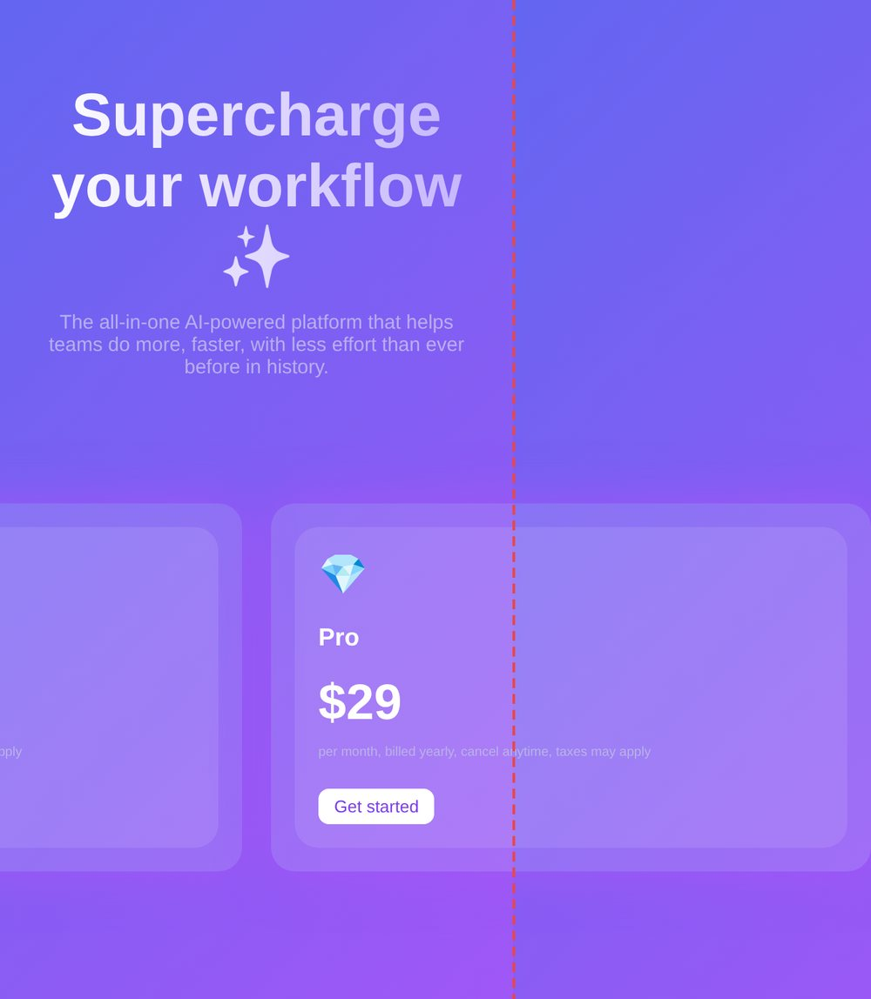
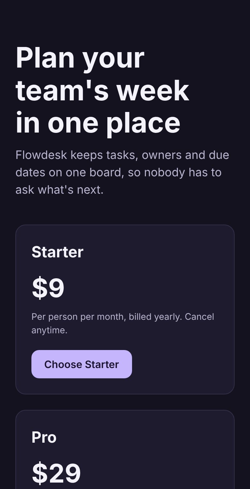

The 390 px overflow
If anything scrolls sideways on a 390 px phone, the page is broken.


The number
- Before
- 6 elementspast the right edge at 390 px; rightmost at 662 px
- After
- 0 elementspast the edge at 390 px
Why it happened. Each plan card had width: 420px; flex: none inside a flex row. Two of them need 900 px; a phone has 390.
The fix
.plans { display: grid; gap: 24px;
grid-template-columns: repeat(auto-fit, minmax(min(100%, 260px), 1fr)); }
.plan { min-width: 0; }Check your own page
Set the browser to 390 px wide and scroll right. In the console, list offenders with:[...document.querySelectorAll('*')].filter(e => e.getBoundingClientRect().right > innerWidth)
Where these numbers come from. One pricing page an AI tool built from a single prompt, measured in Chromium at 1440 × 900 and 390 × 844 on 24 November 2026, before and after fixing exactly what the checks reported (38 → 66 of 66). Both pages are public.
Before pageAfter pageGuide: Before you ship an AI-built interface